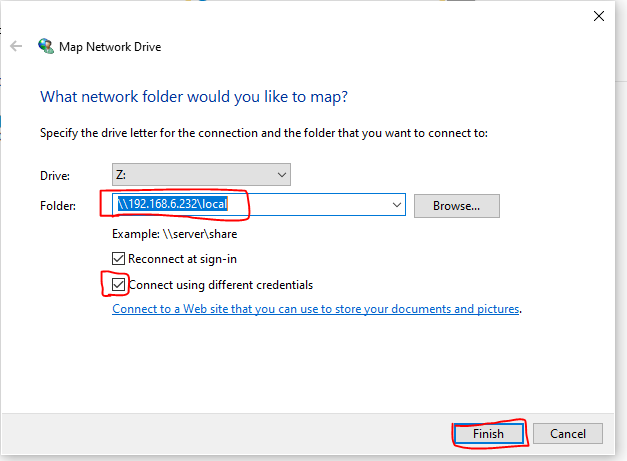
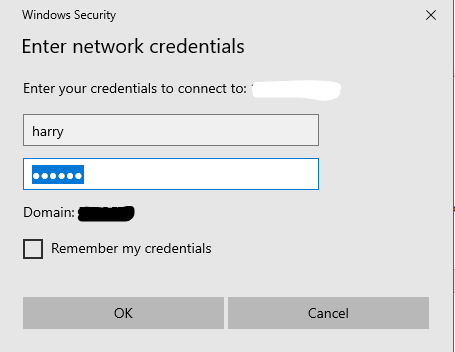

Samba
This tutorial we will be going through setting up SAMBA server with Window/Linux and Linux clients respectively. This article will definitely help you if you are called up for setting up file servers in enterprise environments where we will likely find different type of devices and operating systems.
Our current testing environment persist of two Centos 7 boxes and one Windows 10 machine.
SAMBA Server : 192.168.6.232
SAMBA Client (Linux) : 192.168.6.233
SAMBA Client (Windows) : 10.10.16.16
Firstly , we will need to install the samba server and samba client in the server side. SMB, which stands for Server Message Block, is a protocol for sharing files, printers, serial ports, and communications
yum install samba samba-client -y
Start and enable the samba service,
systemctl start smb
systemctl enable smb
This will open port 445 and 139. You can verify it using,
ss -tupan|grep -i smbd
After starting and enabling the service we will need to add the service in the firewall .
firewall-cmd --add service samba --permanent
firewall-cmd --reload
CONFIGURING SAMBA SHARE
We will need to create a folder which we want to share and also dive into the main configuration file /etc/samba/smb.conf. In this particular example we would like Harry to be given full permission where as the user Andrew to be given Read Only permission.
- CREATE A DIRECTORY YOU WANT TO SHARE
mkdir /local
- CREATE MULTIPLE USER TO READ/WRITE
useradd harry -s /sbin/nologin
useradd andrew -s /sbin/nologin
- ASSIGN SMBPASSWD TO THE USERS
smbpasswd -a harry
New Smb Password:
Retype new Smb Password :
smbpasswd -a andrew
New Smb Password:
Retype new Smb Password :
- CHANGE SELINUX SECURITY CONTEXT TO THE SHARE DIRECTORY (only if selinux is enabled )
We will either need to disable the selinux or set the correct security context for the file to be shared in proper way otherwise selinux will prevent user from accessing the share file.
chcon –t samba_share_t /local
- CHANGE THE MAIN CONFIGURATION FILE
vim /etc/samba/smb.conf
Add the following at the end of the file,
[local]
comment = my local
path = /local
browseable = yes
write list = harry
hosts allow = 192.168.6.
hosts deny = 192.168.6.20
Note: In our example Write List is only given to Harry because the user Harry is only allowed to Read/Write where as for the user Andrew we will keep it as Read Only . 192.168.6. denotes the network address 192.168.6.0/24
Explanation,
[ ] = Share name
comment = Brief introduction about the share optional parameter
path = It specifies absolute path of the directory
browseable = Either yes or no
valid users = To allow access of the given shared directory to the specified users only
write list = To allow write privilege to the given user only
hosts deny = To deny access of the given folder to the specified host.
hosts allow = To allow access of shared directory from the specified host only.
create mask = To force files to be created with
- SET ACL (for the user Harry)
We have set ACL permission of rwx to the user harry for the folder (local) .
setfacl -m u:harry:rwx /local
- VERIFY THE FILE IS BEING SHARED
smbclient -L localhost
OR
testparm
SHARING IN LINUX
You just need to install the samba-client package
yum install samba-client -y
yum install cifs-utils -y
Create user harry and mount in his own home directory,
useradd harry
passwd harry
Create file for storing the username and password for samba client /root/pass.txt Or you can create in any path.
# Write the password which you kept in the server side, No Space.
username=harry
password=redhat
For permanent mount add following line in /etc/fstab
//192.168.6.232/local /home/harry/local cifs credentials=/root/pass.txt,sec=ntlmssp 0 0
Mount it,
mount -a
Switch to user harry and add the server,
su - harry
cd local
echo "test" > hello.txt
Then Harry can create a file inside /home/harry/local which is the folder where we have mounted for sambaserver/local .
MOUNTING THE SAMBA SHARE IN WINDOWS
The folder can also be shared in windows which we have already discussed about it earlier. In order to mount the folder in Windows PC go to MY PC and the choose Computer then map the network drive .
After that we will need to assign a letter for the drive to be mapped check the box where it is written “Connect using different credentials”. 
Give username and password,

Finally you can see a drive is mounted.
Sushant Joshi sushant41269@gmail.com